使用 Zabbix 监控 Jenkins
本文假设读者已经了解 Jenkins 基本概念及插件安装，Zabbix 基础概念。基于 Zabbix 3.4，Jenkins 2.8 做实验
笔者最近的工作涉及到使用 Zabbix 监控 Jenkins。在谷歌上搜索到的文章非常少，能操作的就更少了。所以决定写一篇文章介绍如何使用 Zabbix 监控 Jenkins。
下图为整体架构图：
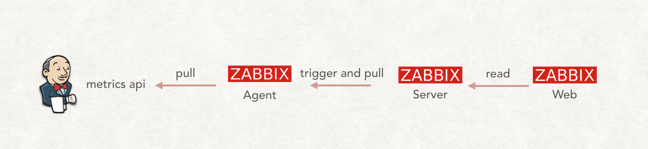
整体并不复杂，大体步骤如下：
- 在 Jenkins 上安装 Metrics 插件，使 Jenkins 暴露 metrics api。
- 配置 Zabbix server 及 agent 以实现监控及告警
为方便读者实验，笔者将自己做实验的代码上传到了 GitHub，链接在文章末尾。使用的是 Docker Compose 技术（方便一次性启动所有的系统）。
接下来，我们详细介绍 Metrics插件及如何实现 Zabbix 监控 Jenkins。
1. 使 Jenkins 暴露 metrics api
安装 Metrics 插件，在系统配置中，会多出“Metrics”的配置，如下图： 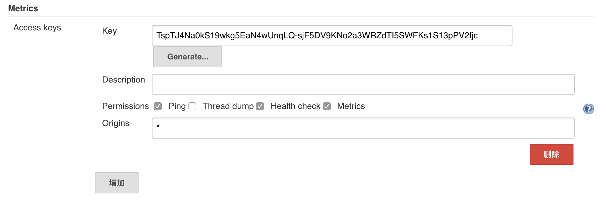
配置项不复杂。我们需要点击“Generate…”生成一个 Access Key（生成后，记得要保存）。这个 Key 用于身份校验，后面我们会用到。
保存后，我们在浏览器中输入URL：http://localhost:8080/metrics/<刚生成的 Access Key> 验证 Jenkins 是否已经暴露 metrics。如果看到如下图，就说明可以进行下一步了。
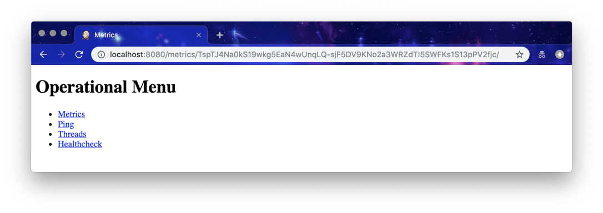
1.1 Metrics 插件介绍
Metrics 插件是基于 dropwizard/metrics 实现。它通过4个接口暴露指标数据：/metrics，/ping，/threads，/healthcheck。
1.2 Metrics 插件：/metrics 接口介绍
点击上图中的metric链接（http://localhost:8080/metrics/<Access Key>/metrics），它暴露了以下指标数据：
{
version: "3.0.0",
gauges: {...},
counters: {...},
histograms: {...},
meters: {...},
timers: {...}
}
从数据结构中可以看出它将指标分成 5 种数据类型： * Gauges：某项指标的瞬时值，例如：当前 Jenkins executor 的总个数（jenkins.executor.count.value） * Counters：某项指标的总数值，例如：http 请求活动连接数（http.activeRequests） * Meters：一段时间内，某事件的发生概率，例如：Jenkins成功执行的任务每分钟的执行次数（jenkins.runs.success.m1_rate） * Histogram：统计指标的分布情况。例如：Jenkins executor 数量的分布（jenkins.executor.count.history） * Timer：某项指标的持续时间。例如：Jenkins 任务等待时间（jenkins.job.waiting.duration）
由于指标非常之多，我们就不分别介绍了。具体有哪些指标，读者朋友可以从代码仓库中的 metrics.json 文件了解。
1.2 Metrics 插件其它接口介绍
- /ping：接口返回
pong代表 Jenkins 存活，如下图： 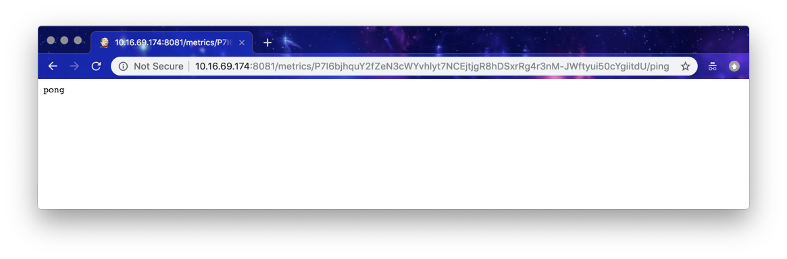 - /threads：返回 Jenkins 的线程信息
- /healthcheck：返回以下指标：
{
disk-space: {
healthy: true
},
plugins: {
healthy: true,
message: "No failed plugins"
},
temporary-space: {
healthy: true
},
thread-deadlock: {
healthy: true
}
}
2. 配置 Zabbix server 与 agent 实现监控及告警
Zabbix server 通过与 Zabbix agent 进行通信实现数据的采集。而 Zabbix agent 又分为被动和主动两种模式。我们使用的是被动模式，也就是Zabbix server 向 agent 索要数据。
所以，我们需要在 Zabbix agent 所在机器放一个获取 Jenkins 指标数据的脚本。再配置 Zabbix server 定时从该 agent 获取数据，最后配置触发器（trigger）实现告警。
接下来的关于 Zabbix 的配置，基于我的 jenkins-zabbix 实验环境，读者朋友需要根据自己的实际情况变更。
2.1 配置 Zabbix server 如何从 agent 获取指标数据
首先，我们需要告诉 Zabbix server 要与哪些 Zabbix agent 通信。所以，第一步是创建主机，如下图： 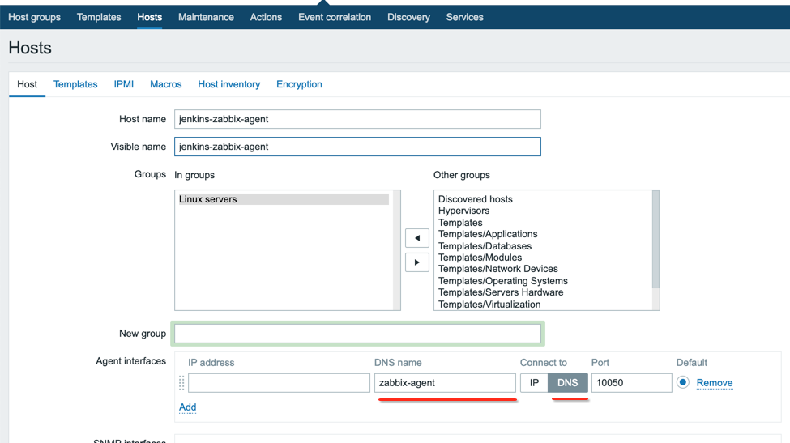 第二步，在主机列表中点击“Iterms”进行该主机的监控项设置： 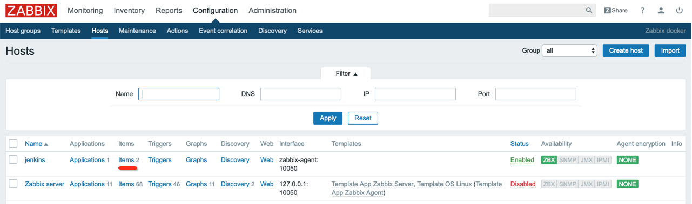 第三步，进入创建监控项页面： 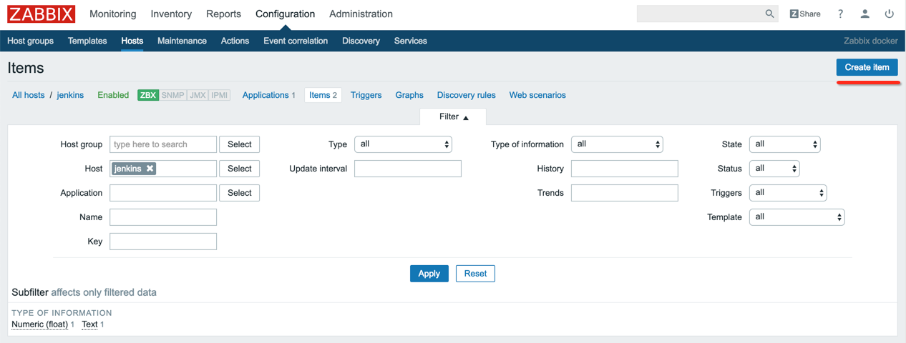 第四步，创建监控项： 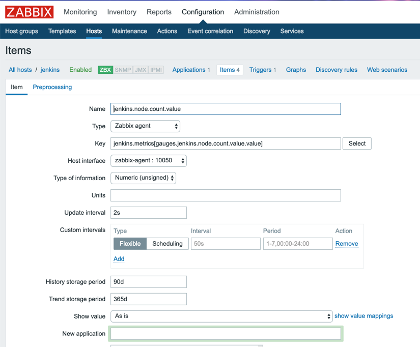
这里需要解释其中几个选项为什么要那样填：
* Type：是 Zabbix server 采集指标的类型，我们选择的是 Zabbix agent，如上文所说。
* Key：由于我们要监控的指标并不是 Zabbix 预定义的。所以，需要使用用户自定义参数来实现监控 Jenkins 指标。Key 填的值为：jenkins.metrics[gauges.jenkins.node.count.value.value]。jenkins.metrics是需要执行的真正的 Key 名称。而 [] 内是传给该 Key 对应的命令的参数。对于初学者，Zabbix 这部分概念非常不好理解。也许这样会更好理解：在使用用户自定义参数来实现监控的情况下，Zabbix server 会将这个 Key 发送给 agent，然后 agent 根据这个 Key 执行指定的 逻辑 以获取指标数据。这个 逻辑 通常是一段脚本（shell命令或Python脚本等）。而脚本也是可以传参的，[]中的值就是传给脚本的参数。具体更多细节，下文会继续介绍。
* Type of information：监控数据的数据类型，由于我们监控的是 Jenkins node 节点的个数，所以，使用数字整型。
* Update interval：指 Zabbix server 多长时间向 agent 获取一次数据，为方便实验，我们设置为 2s。
到此，Zabbix server 端已经配置完成。
2.2 配置 Zabbix agent 使其有能力从 Jenkins 获取指标数据
当 Zabbix agent 接收到 server 端的请求，如 jenkins.metrics[gauges.jenkins.node.count.value.value]。Zabbix agent 会读取自己的配置（agent 启动时会配置），配置内容如下：
## Zabbix Agent Configuration File for Jenkins Master
UserParameter=jenkins.metrics[*], python /usr/lib/zabbix/externalscripts/jenkins.metrics.py $1
根据 Key 名称（jenkins.metrics）找到相应的命令，即：python /usr/lib/zabbix/externalscripts/jenkins.metrics.py $1。并执行它，同时将参数 gauges.jenkins.node.count.value.value 传入到脚本 jenkins.metrics.py 中。jenkins.metrics.py 需要我们在 Jenkins agent 启动前放到 /usr/lib/zabbix/externalscripts/ 目录下。
jenkins.metrics.py 的源码在 jenkins-zabbix 实验环境中可以找到，篇幅有限，这里就简单介绍一下其中的逻辑。
jenkins.metrics.py 所做的事情，无非就是从 Jenkins master 的 metrics api 获取指标数据。但是由于 api 返回的是 JSON 结构，并不是 Zabbix server 所需要的格式。所以，jenkins.metrics.py 还做了一件事情，就是将 JSON 数据进行扁平化，比如原来的数据为：{"gauges":{"jenkins.node.count.value": { "value": 1 }}} 扁平化后变成： gauges.jenkins.node.count.value.value=1。
如果 jenkins.metrics.py 脚本没有接收参数的执行，它将一次性返回所有的指标如：
......
histograms.vm.memory.pools.Metaspace.used.window.15m.stddev=0.0
histograms.vm.file.descriptor.ratio.x100.window.5m.p75=0.0
histograms.vm.memory.pools.PS-Old-Gen.used.window.5m.count=4165
gauges.vm.runnable.count.value=10
timers.jenkins.task.waiting.duration.mean=0.0
histograms.vm.memory.non-heap.committed.history.p99=123797504.0
gauges.vm.memory.pools.PS-Eden-Space.used.value=19010928
gauges.jenkins.node.count.value.value=1
histograms.vm.memory.pools.Code-Cache.used.window.15m.mean=44375961.6
......
但是，如果接收到具体参数，如 gauges.jenkins.node.count.value.value ，脚本只返回该参数的值。本例中，它将只返回 1。
jenkins.metrics.py 脚本之所以对 JSON 数据进行扁平化，是因为 Zabbix server 一次只拿一个指标的值（这点需要向熟悉 Zabbix 的人求证，笔者从文档中没有找到明确的说明）。
注意：在 2.1 节中，如果 Key 值设置为：jenkins.metrics，Zabbix server 不会拿 jenkins.metrics.py 返回的所有的指标值自动创建对应的监控项。所以，Key 值必须设置为类似于 jenkins.metrics[gauges.jenkins.node.count.value.value] 这样的值。
3. 配置 Zabbix server 监控指标，并告警
在经过 2.2 节的配置后，如果 Zabbix server 采集到数据，可通过_Monitoring -> Latest data -> Graph_菜单（如下图），看到图形化的报表：
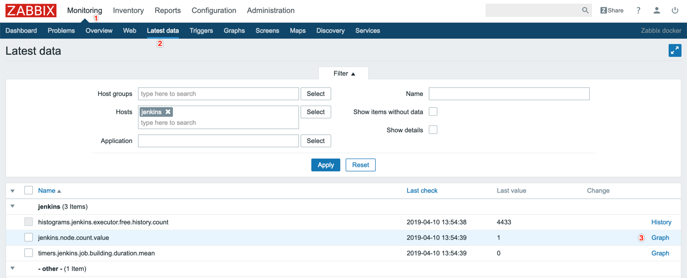
图形化的报表： 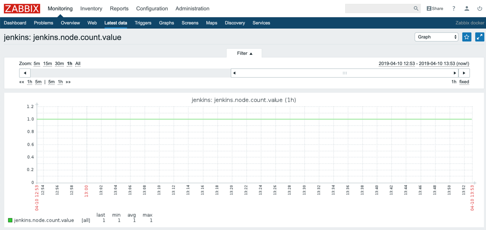
有了指标数据就可以根据它进行告警了。告警在 Zabbix 中称为触发器（trigger）。如下图，我们创建了一个当 Jenkins node 小于 2 时，就触发告警的触发器：
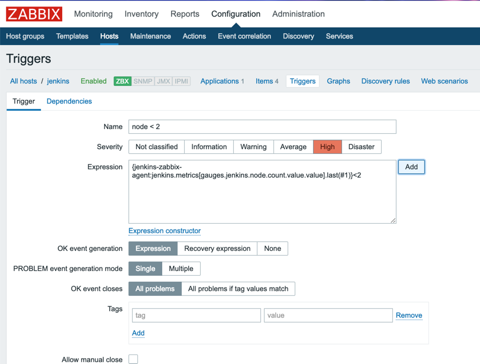
至于最终触发器的后续行为是发邮件，还是发短信，属于细节部分，读者朋友可根据自己的情况进行设置。
小结
在理解了 Zabbix server 与 agent 之间的通信原理的前提下，使用 Zabbix 监控 Jenkins 是不难的。笔者认为难点在于自动化整个过程。上文中，我们创建主机和添加监控项的过程，是手工操作的。虽然 Zabbix 能通过自动发现主机，自动关联模板来自动化上述过程，但是创建”自动化发现主机“和”自动关联动作“依然是手工操作。这不符合”自动化一切“的”追求“。
最后，如果读者朋友不是历史包袱原因而选择 Zabbix，笔者在这里推荐 Prometheus，一款《Google 运维解密》推荐的开源监控系统。
附录
- Metrics 插件：https://wiki.jenkins.io/display/JENKINS/Metrics+Plugin
- dropwizard/metrics：https://metrics.dropwizard.io/4.0.0/
- Zabbix 监控项类型：https://www.zabbix.com/documentation/3.4/zh/manual/config/items/itemtypes
- metrics.json： https://github.com/zacker330/jenkins-zabbix/blob/master/metrics.json
- jenkins-zabbix 实验环境：https://github.com/zacker330/jenkins-zabbix
- Prometheus：https://prometheus.io/